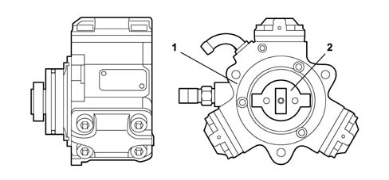
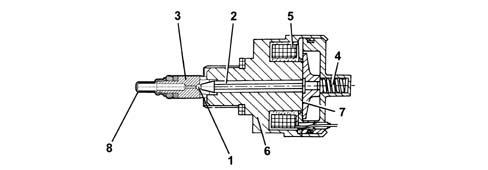

1060E diesel pressure pump
- Path
- Descriptions > 10 ENGINE > 1060 DIESEL FUEL INJECTION > 1060E diesel pressure pump
- Kind
- system description
- Applies to
- engines: 1.3 JTD; all production periods
- Interactive page
- https://sloeber94.github.io/elrnDB-lYpsln/en/#/2427399
Applies to: engines: 1.3 JTD; all production periods
Type
It is the 'radial jet' type with three radial pistons (total capacity 0.567 cm3) and is driven by the camshaft via an Oldham joint; it has no timing positions.
Applies to: engines: 1.3 JTD; all production periods
Structure
Each pumping unit consists of:
- a piston (5) operated by a cam (2) fixed to the pump (6) shaft;
- an inlet plate valve (3);
- a supply ball valve (4).
The pressure pump must be supplied with a pressure of at least 0.7 bar; so the fuel system has an auxiliary pump immersed in the fuel tank.
The maximum supply pressure reaches 1400 bar.
The pressure pump is lubricated and cooled by the same fuel by means of suitable ducts.

1 - Pressure pump 2 - Oldham joint connecting to camshaft
Applies to: engines: 1.3 JTD; all production periods
Structure
It is fitted on the rail and controlled by the injection control unit, and it regulates the fuel supply pressure to the injectors.
The pressure regulator basically consists of:
- a spherical shutter (1);
- a pin (2) controlling valve (3);
- a pre-loading spring (4);
- a coil (5).

1 - Spherical shutter 2 - Pin 3 - Valve 4 - Pre-loading spring 5 - Coil 6 - Casing 7 - Keeper 8 - Filter